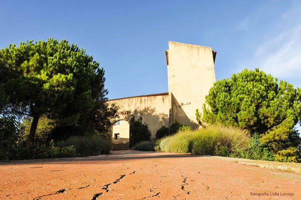
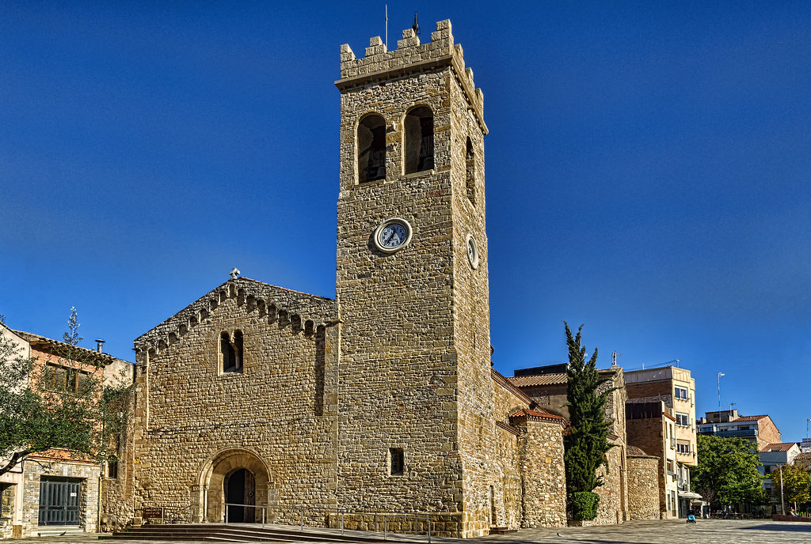
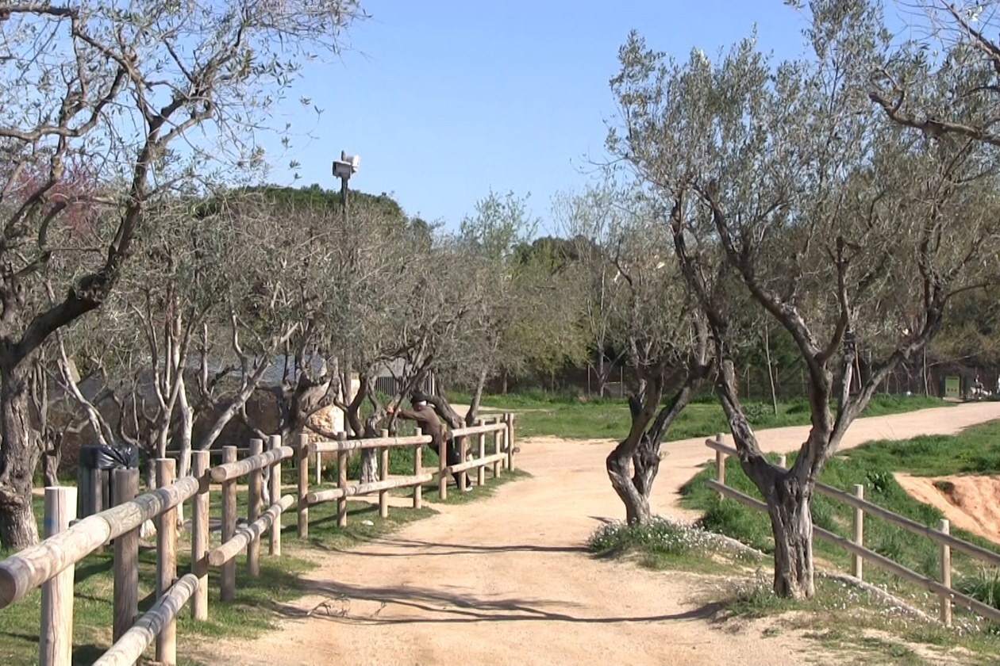
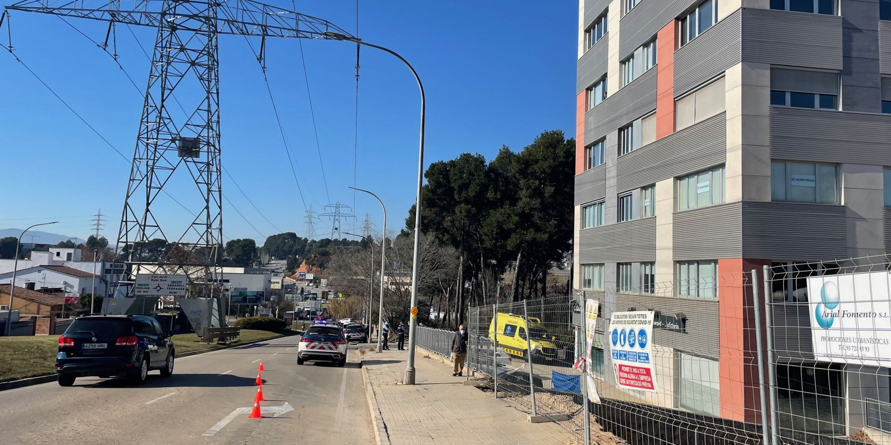
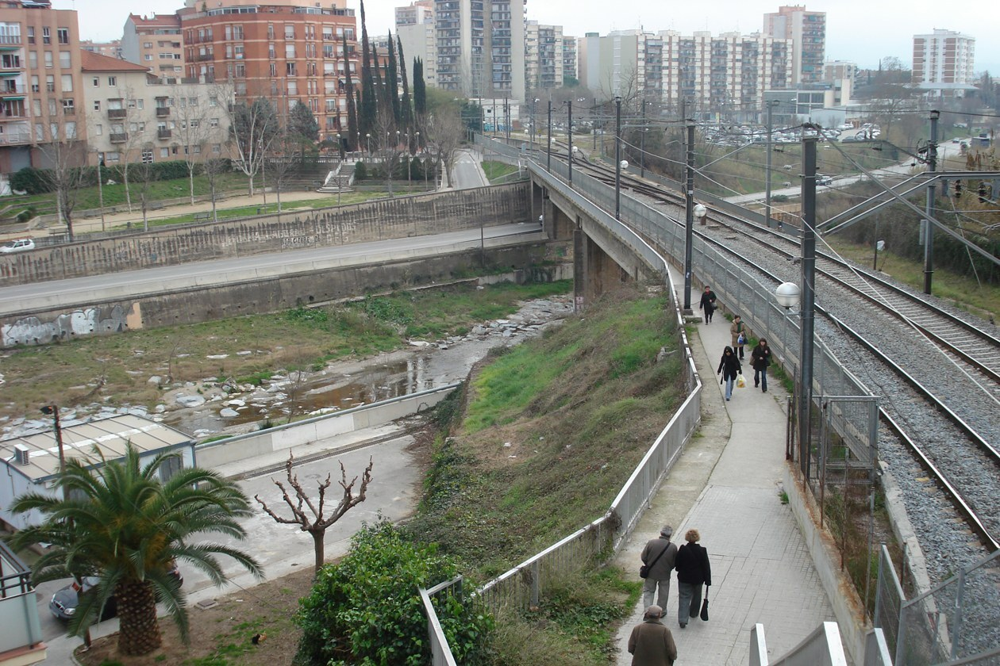
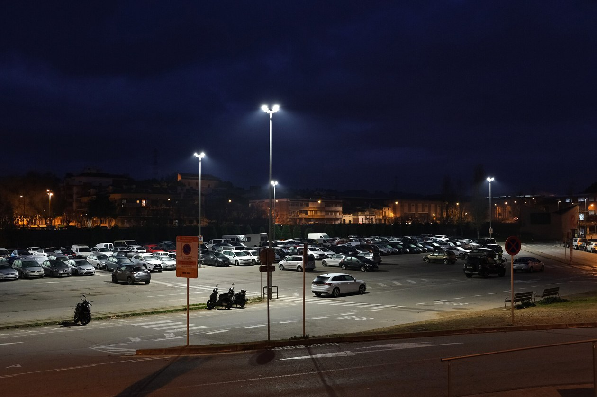

Visita RUBÍ
En esta ocasión, hemos elegido Rubí para descubrir sus rincones con encanto. Rubí esta ubicado en la provincia de Barcelona, en concreto en la comarca del Vallés Occidental. Sigue leyendo para saber que ver en Rubí en unas horas.
Si no tienes coche, puedes llegar desde Barcelona con los ferrocarriles desde la estación plaza Cataluña en Barcelona. Se tarda aproximadamente 38 minutos. Si quieres en Barcelona puedes realizar un free tour.
También, puedes llegar en tren con la línea R8.
En coche, desde Barcelona se tarda aproximadamente 35 minutos. Para aparcar de manera gratuita puedes probar en el parking de la Rambleta de Joan Miró. Esta situado cerca de la estación de ferrocarriles de Cataluña.
Museu Castell
Debes saber que se trata de un castillo, pero actualmente hay exposiciones en su interior de fotografía en la planta baja y de historia en la planta 1.
El horario de visita en Semana Santa es: Sábado de 11 a 14 h y de 16 a 20 h. El domingo y lunes de 11 a 14 h.
horario habitual es: jueves y viernes de 11h a 14 h. De martes a viernes de 16h a 20h. Sábados de 11h a 14h y de 16 a 20h. Domingos y festivos de 11h a 14 h. Lunes cerrado. La entrada es gratuita.
Esglesia de Sant Pedro
Esta declarada como Bien Cultural de Interés Local. El campanario conserva elementos del antiguo templo prerrománico.
Ajuntament de Rubí
El ayuntamiento está situado muy cerca del aparcamiento, es moderno y al lado tiene las letras de Rubí para hacerte la típica foto.

Parc de Ca n'Oriol
El parque de Ca N’Oriol tiene una superficie total de 3 hectáreas. El parque forma parte de la masía de Ca n’Oriol, antiguamente conocida como Mas Cases Besses. En el parque encontrarás una piscina, bosque, área de juegos, etc.
Noticies
Suicidi a l'avinguda de l'electricitat
Aquest dimarts 25 de gener, al voltant de les 12:30 h, un home s’ha precipitat des d’un quart pis d’un edifici de l’avinguda de l’Electricitat 19, a Rubí. Al lloc dels fets s’han desplaçat quatre unitats del Servei d’Emergències Mèdiques (SEM) però tot i les tasques de reanimació no s’ha pogut fer res per salvar-li la vida. El SEM també ha enviat un psicòleg per atendre familiars de la víctima.
S’inicien les obres de rehabilitació estructural del pont dels Ferrocarrils sobre la riera de Rubí
Les obres de rehabilitació estructural del pont de Ferrocarrils de la Generalitat de Catalunya (FGC) sobre la riera de Rubí ja s’han iniciat. L’actuació està promoguda per FGC, tot i que l’Ajuntament farà un seguiment i control durant tot el desenvolupament de les obres. Els treballs permetran la rehabilitació i el reforç de l’estructura existent, deteriorada principalment pel pas dels anys i per la falta d’un sistema de drenatge adient, alhora que es milloraran altres elements que la configuren.
L’Ajuntament renova l’enllumenat de l’aparcament de l’Escardívol per millorar la seguretat i estalviar energia i diners
El Consistori ha renovat recentment la il·luminació de la zona d’aparcament de l’Escardívol. L’objectiu d’aquesta actuació ha estat doble: d’una banda, millorar la seguretat de l’espai i, de l’altra, estalviar energia i, de retruc, diners.